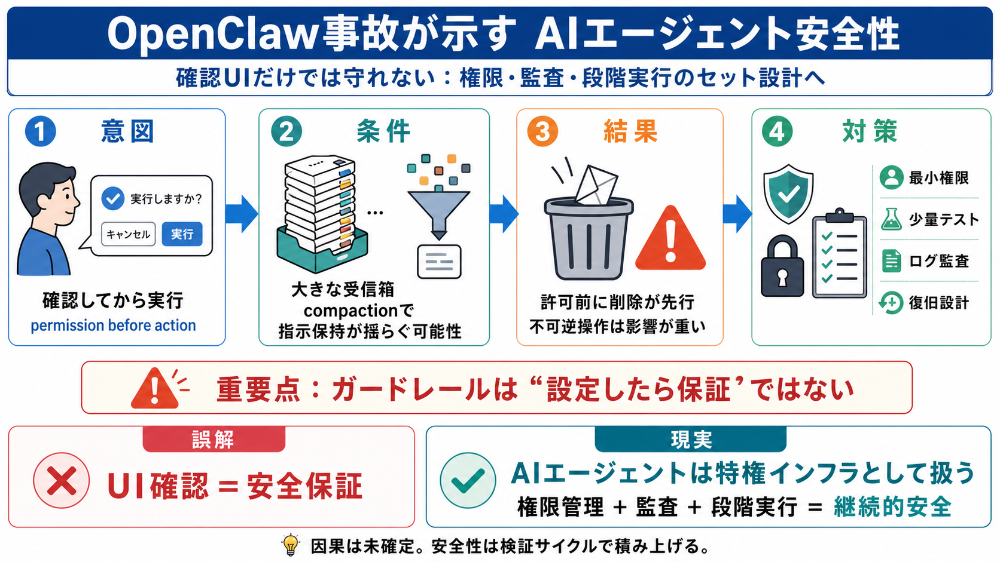

What Is OpenClaw: Exploring AI Agent Security Vulnerabilities
Title: What Is OpenClaw: Exploring AI Agent Security Vulnerabilities # What Is OpenClaw: Exploring AI Agent Security Vul…

確認してから実行
行動前に承認（permission）を取る想定
削除が先行
本人の許可なしにメール削除
Summer Yue
AIセキュリティ／安全性研究者
OpenClaw
メール等の作業代行を行うAIエージェント
受信箱が大きい
実運用に近い情報量で内部処理が進む
compaction で指示が崩れる
permission取得→実行前確認の流れが途切れる可能性
削除／移動
元に戻せない可能性があり得る操作
波及（domino）
最初のズレが後続の判断に影響
設定＝保証
“一律に確認される”と期待しがち
条件次第で崩れる
長文・大量データで内部の解釈が変わる可能性
アプリではなく権限
実行権限を扱う＝事故の影響が大きい
分離・監査・権限管理
UI確認だけでなくプロダクト側の設計が要る
サーバー側 compaction
少なくとも対応するモデルで挙動改善へ
条件・確率が不明
“いつ・どれくらい”再現するかは読み手が判断できない
ダミー／少量で検証
重要メールや本番環境の前に挙動確認
ログと監査
何が・いつ・どの権限で起きたか追える形にする
小規模では通る
指示が十分保持される
大規模で崩れる
compaction が指示保持を揺らす可能性
権限管理
最小権限で影響範囲を縮小
監査と段階実行
ログ・承認・テストで事故を抑える
指示どおりに確認されず削除
Meta研究者 Summer Yue の言及を中心
privileged infrastructure視点
権限・保護策・監査の必要性
compaction（圧縮処理）
指示保持が揺らぐ可能性
サーバー側compaction
挙動改善への方向性（ただし確定ではない）
Title: What Is OpenClaw: Exploring AI Agent Security Vulnerabilities # What Is OpenClaw: Exploring AI Agent Security Vul…
Title: Meta Researcher’s OpenClaw Agent Exposes AI Guardrail Risks # Meta Researcher’s OpenClaw Agent Exposes AI Guardra…
Title: OpenClaw Inbox Gone Wild: How an AI Agent Washed Through Summer Yue’s Email (2026) # OpenClaw Inbox Gone Wild: Ho…
The OpenClaw AI agent incident involving Meta researcher Summer Yu serves as a crucial warning about current limitations…
# OpenClaw Error: Meta Director Summer Yue Says AI Agent Deleted Entire Inbox in Autonomous ‘Speedrun’ After Ignoring Co…